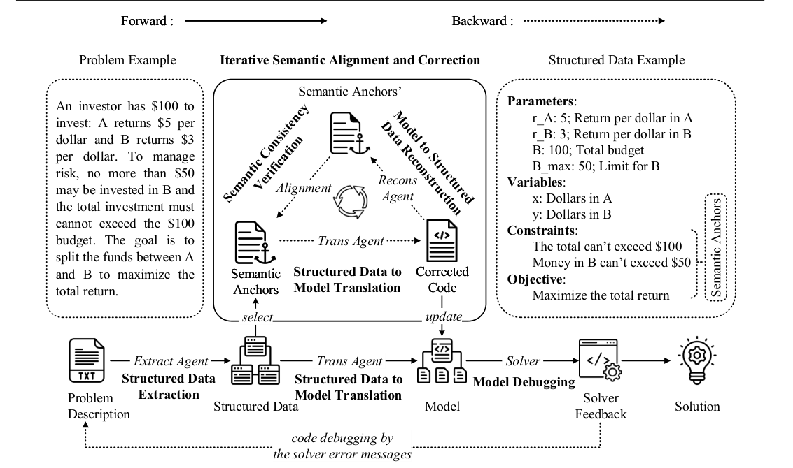

SAC-Opt: Semantic Anchors for Iterative Correction in Optimization Modeling
SAC-Opt checks generated optimization code against semantic anchors from the original problem and iteratively corrects mismatches.

SAC-Opt extracts structured semantic anchors, generates a model, checks code semantics against the anchors, and selectively corrects mismatches before solver execution.
01 / Research question
How can optimization models catch silent semantic mistakes that produce executable code but encode the wrong constraints or objective?
02 / Approach
SAC-Opt extracts semantic anchors for parameters, variables, constraints, and the objective from the problem description, translates the structured data into an initial model, and reconstructs the model semantics from generated code. It compares each reconstructed anchor with the original and revises only mismatched components, repeating until alignment or an iteration limit. Solver-based debugging remains a final step for execution errors. This adds a backward semantic-correction loop to the usual forward code-generation pipeline.
03 / Research scope
The paper evaluates seven public optimization modeling datasets using a unified GPT-4o setup, with five independent runs per method. A result is counted as correct only when the code executes and returns both the correct objective value and optimal solution. SAC-Opt reports 86.8% accuracy on NL4OPT, 63.8% on IndustryOR, 96.5% on EasyLP, 79.6% on ComplexLP, 94.0% on NLP4LP, 88.7% on ReSocratic, and 58.9% on ComplexOR; the reported gain over the second-best method is largest on ComplexLP at 21.9 percentage points.
Experimental results
Accuracy across optimization modeling benchmarks
| Method | NL4OPT | IndustryOR | EasyLP | ComplexLP | NLP4LP | ReSocratic | ComplexOR |
|---|---|---|---|---|---|---|---|
| Standard | 61.2 | 38.1 | 70.3 | 57.7 | 73.6 | 48.4 | 42.9 |
| Chain-of-Thought | 62.2 | 40.5 | 49.5 | 42.3 | 74.7 | 43.6 | 39.2 |
| Chain-of-Experts | 66.7 | 31.2 | 94.4 | 50.6 | 87.4 | 71.2 | 57.1 |
| CAFA | 68.1 | 41.1 | 71.2 | 44.5 | 50.0 | 40.1 | 46.4 |
| Reflexion | 68.2 | 49.0 | 85.8 | 43.2 | 82.4 | 76.1 | 42.2 |
| OptiMUS-0.2 | 69.2 | 43.8 | 89.2 | 45.8 | 86.5 | 75.8 | 48.9 |
| OptiMUS-0.3 | 79.8 | 54.3 | 92.4 | 52.1 | 89.8 | 81.0 | 52.2 |
| SAC-Opt | 86.8 | 63.8 | 96.5 | 79.6 | 94.0 | 88.7 | 58.9 |
Standard, Chain-of-Thought, Chain-of-Experts, and CAFA results are reproduced from the survey in the same setting. Other baselines use their official implementations where available.
SAC-Opt leads all seven reported columns. Its largest margin over the second-best method is 21.9 percentage points on ComplexLP.
Contribution of semantic correction and debugging
| Method | NL4OPT | IndustryOR | EasyLP | ComplexLP | NLP4LP | ReSocratic | ComplexOR |
|---|---|---|---|---|---|---|---|
| SAC-Opt | 86.8 | 63.8 | 96.5 | 79.6 | 94.0 | 88.7 | 58.9 |
| Without semantic correction | 82.9 | 50.5 | 86.6 | 63.8 | 90.1 | 80.2 | 54.4 |
| Without solver debugging | 84.6 | 60.5 | 92.4 | 72.3 | 92.8 | 84.5 | 56.7 |
Semantic correction aligns model elements with problem intent. Solver debugging handles execution errors after semantic correction.
Removing semantic correction causes a larger accuracy drop than removing final solver debugging, supporting the central role of explicit semantic alignment.
Citation
@inproceedings{sacopt2026,
title = {SAC-Opt: Semantic Anchors for Iterative Correction in Optimization Modeling},
author = {Yansen Zhang and Qingcan Kang and Yujie Chen and Yufei Wang and Xiongwei Han and Tao Zhong and Mingxuan Yuan and Chen Ma},
booktitle = {ICML},
year = {2026},
url = {https://proceedings.mlr.press/v306/zhang26cb.html}
}